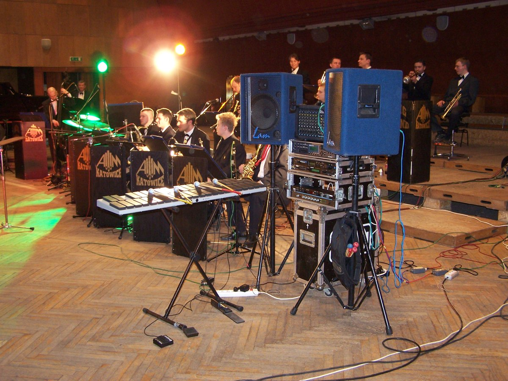

KAT MalletKAT MIDI Percussion Controller
A chromatic mallet-percussion interface whose force-sensing pads make the two-mallet strike itself the input

Overview
The MalletKAT is a MIDI percussion controller developed by KAT, the company founded by electronic instrument designer Keith McMillen in Massachusetts in the mid-1980s. Its defining interface is a chromatic layout of playable rubber pads — arranged like a marimba or vibraphone rather than a drum kit or piano — that the performer strikes with two mallets. Each pad uses Force-Sensing Resistors (FSR) to read strike velocity, sustained force, and damping, so the playing dynamics become part of the input data. Because it is a controller rather than a sound module, it sends MIDI note and expression data to external synthesizers and samplers; later generations added a sequencer, footswitch editing, and a scrolling display.
The first MalletKAT models appeared in 1985-86, establishing KAT's family of percussion controllers that also included the DrumKAT, TrapKat, and PanKAT. Professional adopters spanned rock and jazz: Neil Peart of Rush played one, and jazz vibraphonist Roy Ayers is closely associated with the instrument.
### The body's mallet strike is the interface
The MalletKAT is genuinely two-handed and full-arm. The performer faces a pitched grid and plays it with two mallets; the FSR pads read not just which note but how the strike was physically delivered — velocity, pressure, damping. This makes mallet technique itself the computer interface, a full-body performance captured as data. It is the museum's only mallet-percussion interface and its only chromatic force-sensing-pad instrument.
### A controller, not a synthesizer
Like the museum's SynthAxe and Casio DG-20, the MalletKAT separates physical interface from sound generation: it produces MIDI data for external instruments. The interaction model is the point. This is distinct from the collection's finger- or stick-triggered drum-computer entries (Linn LM-1, Mattel Synsonics, Movement Systems), which are discrete drum sounds, and from keyboard-layout and touch-strip instruments already collected.
Deep dive
Team & pioneers
- Keith McMillen. Founder of KAT Inc.; instrument designer behind the MalletKAT and later KMI (Keith McMillen Instruments).
- Alternate Mode. Company that acquired and continued the KAT product line.
- Neil Peart / Roy Ayers. Notable professional MalletKAT players.